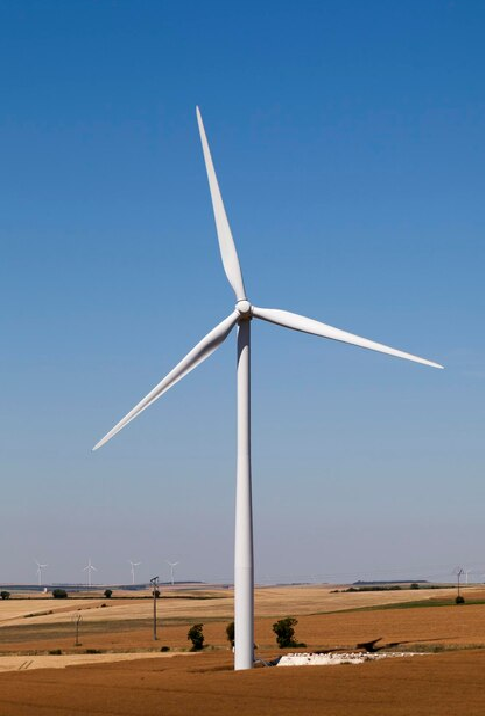
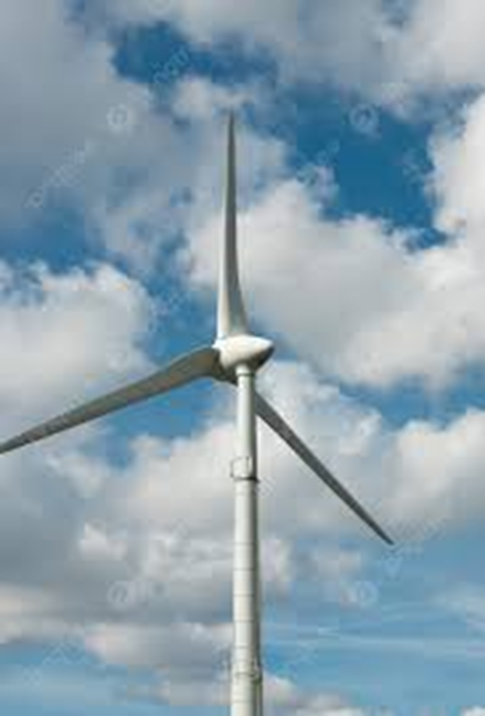
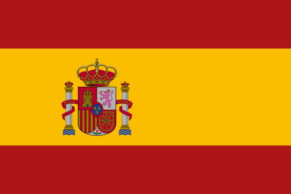
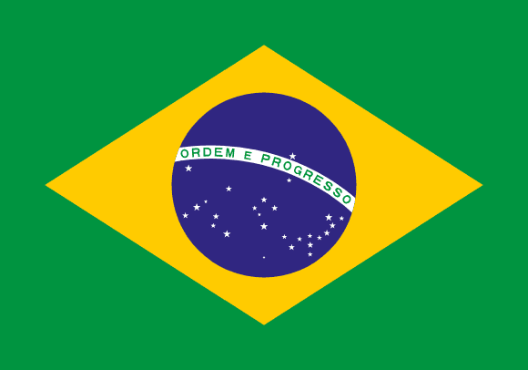

O Brasil Sustentável: Desafios e Oportunidades da Geração Eólica
Depois de entendermos os detalhes técnicos e a viabilidade a longo prazo das turbinas eólicas,
é importante examinar a sua aplicação no contexto do Brasil. Além de reconhecer as vantagens,
é crucial abordar as dificuldades do mercado, considerando a importância da energia eólica no
nosso panorama geográfico, político e mundial.
A expansão da energia eólica no Brasil tem sido notável pois, em cerca de dez anos, passamos de uma presença quase
nula a ocupar a sexta posição entre os maiores geradores globais. O gráfico apresentado ilustra o aumento da
eletricidade produzida por aerogeradores (em TWh) nos últimos anos, com base em informações oficiais da
ABEEólica e do Balanço Energético Nacional (EPE).
- Aceleração Pós-2011: O crescimento "vertical" começou com os primeiros leilões
exclusivos para a fonte e o apoio de financiamentos de BNDES.
- Resiliência em Crises: Em 2021 e 2024, e eólica foi crucial para evitar apagões
durante períodos de seca severa que afetarem as hidrelétricas.
- Recorde em 2024: A produção atingiu 107.6 TWh, um aumento de 12% em relação ao
ano anterior, consolidando a fonte como a segunda força do nosso sistema elétrico.
- Capacidade Instalada: Atualmente, o país já conta com mais de 33 GW de potência
instalada, o que é suficiente para abastecer milhões de residências brasileiras.
Potencial e Performance
Tendo em conta a eficiência das turbinas e os ganhos que o Brasil tem, é crucial ressaltar
os elementos que fazem da energia eólica algo tão importante para a nossa produção de energia.
Compatível com uso agrícola/pecuário no mesmo terreno: As torres ocupam uma área
de solo muito pequena. Isso permite que o proprietário da terra continue cultivando soja, milho
ou criando gado abaixo e ao redor das turbinas, maximizando a produtividade da propriedade.
Reduz dependência de combustíveis fósseis: Ao inserir mais vento na nossa matriz, o país
diminui a necessidade de acionar usinas termelétricas (movidas a diesel ou gás), que são mais caras e
extremamente poluentes.
Ótima eficiência em regiões costeiras e serras: Nessas áreas, os ventos costumam ser
mais fortes e unidirecionais. O litoral do Nordeste e as serras do Sul do Brasil são exemplos de
locais onde a geografia potencializa drasticamente a captura de energia.
Alta circularidade dos componentes: Atualmente, cerca de 85% a 90% dos componentes de
uma turbina (aço, cobre, alumínio) são recicláveis. A indústria já está desenvolvendo soluções para que
até as pás, feitas de resina, sejam totalmente reaproveitadas ao fim do ciclo.
Potencial para geração distribuída: Além dos grandes parques, existem pequenos
aerogeradores que podem ser instalados em sítios, empresas ou áreas isoladas. Isso permite que o
consumidor produza sua própria energia no local de consumo, reduzindo perdas na rede elétrica.
Vida útil de 20 a 25 anos: Um parque eólico é um investimento de longo prazo. Durante
essas duas décadas, o sistema gera energia de forma estável, pagando seu custo inicial nos primeiros
anos e gerando lucro e energia limpa pelo restante do tempo.
|

https://www.magnific.com/br/fotos/energia-vento/
|
Desafios e Limitações
A energia eólica é vital para um futuro sustentável, mas o Brasil enfrenta percalços ao adotá-la. Para usufruirmos
plenamente dos nossos ventos, devemos encarar desafios técnicos, ambientais e logísticos. Estes desafios colocam à
prova a viabilidade e a integração da tecnologia eólica no país.
|

https://pt.pngtree.com/freebackground/.html
|
Dependência Tecnológica e de Insumos: Apesar de produzirmos grande parte dos
componentes localmente, o Brasil ainda precisa importar itens essenciais e tecnologias avançadas.
As variações nas taxas de câmbio (principalmente a alta do dólar) aumentam os gastos com a
construção e as peças de substituição, afetando o custo total do empreendimento.
Choques no Uso da Terra e seus Efeitos na Sociedade: Em alguns lugares, a criação
de parques pode gerar atritos com povos nativos, comunidades remanescentes de escravos ou trabalhadores
da pesca. A delimitação de espaços por motivos de proteção pode restringir o trânsito por rotas antigas
ou locais de sustento, o que demanda acordos sociais delicados.
Destinação das Hélices ao Final da Sua Utilidade: Apesar da torre ser quase toda
reaproveitável, as hélices são produzidas com materiais mistos (fibra de vidro e resina), o que dificulta
sua reciclagem. Com os primeiros parques eólicos do país se aproximando dos 20 anos, o Brasil começa a
lidar com o problema ambiental e de transporte para dar um fim adequado ou reutilizar essas grandes
estruturas.
Impacto na vida selvagem: As turbinas eólicas podem ser perigosas para aves e morcegos,
principalmente quando instaladas em áreas de passagem migratória. Para minimizar esse risco, o processo de
licenciamento ambiental requer análises detalhadas do local e pode empregar tecnologias, como sensores que
identificam a presença de animais e diminuem a rotação das hélices de forma automática.
Variação Eólica: A geração de eletricidade a partir do vento está sujeita a flutuações,
já que sua força muda constantemente, tanto em curtos períodos quanto em diferentes épocas do ano. Para lidar
com essa inconstância, o sistema precisa de outras opções (usinas de água ou a carvão, por exemplo) ou estocar
energia em baterias potentes para suprir a demanda quando não houver vento.
|
Ranking Global de Capacidade Eólica
Para compreendermos a magnitude da produção brasileira, é essencial olhar para além das nossas fronteiras. O Brasil
não apenas entrou no mapa da energia limpa, mas hoje disputa espaço com as maiores potências econômicas do mundo. A tabela a
seguir apresenta o ranking global de capacidade instalada, revelando onde o nosso país se posiciona nessa corrida tecnológica e
sustentável pela liderança dos ventos.
Ranking Global de Capacidade Eólica
| Posição |
País |
Capacidade (GW) |
| 1º |
China |
441,9 |
| 2º |
 Estados Unidos Estados Unidos |
148,0 |
| 3º |
 Alemanha Alemanha |
69,5 |
| 4º |
Índia |
44,7 |
| 5º |
 Espanha |
31,0 |
| 6º |
 Brasil |
29,2 |